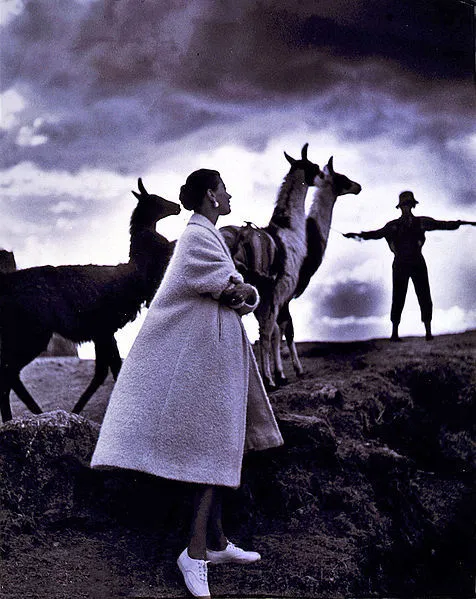

The whole atmosphere
June 28, 2025
Toni Frissell, Cusco, Peru for Harper's Bazaar 1952
The whole atmosphere was ridden with a Biblical splendor punctuated with the tinkling bells of the ponies, the reverberations of the poison song, the faint boom of the surf far below and an undefinable murmuring which was probably nothing more than the hammering of the temples in the high and sultry haze of an Ionian morning.
pg. 20 The Colossus of Maroussi Henry Miller